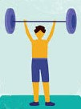

Sobre eu
Meu nome é Felipe Tavares, tenho 16 anos, nasci na cidade de São Paulo, sou brasileiro, estudo no colégio módulo desde o 3º ano do fundamental I. Não sou de falar muito, mas há momentos que eu gosto de falar. Gosto de ler a Bíblia e ver coisas sobre ela, também gosto de pesquisar sobre saúde, ver animais e plantas e às vezes também gosto de alguns assuntos das matérias escolares. Para saber sobre as coisas que eu gosto, clique nos botões encima da foto de mim mesmo.
Ler a Bíblia
Acho interessante e importante ler a Bíblia, nela é contada boa parte da história do mundo e ainda de coisas que muitas pessoas não sabem. Eu confio na Bíblia, eu acredito que ela fala somente a verdade. Ela contém informações muito importantes para nossa vida, como de nos ensinar a sermos pessoas melhores, nos mostra o que vai acontecer no futuro pelas profecias, quais são os nossos deveres e quais devem ser as nossas atitudes, a importância de Cristo e sobre outras coisas.


Pesquisar sobre saúde
Eu acho muito interessante e legal pesquisar sobre saúde, é um assunto que eu gosto e é muito importante, desse modo eu pesquisou uma coisa que é importante e que eu gosto. Pesquisando sobre saúde, eu mudei hábitos meus que não eram bons e eu já estou podendo ver diferenças na minha vida, por exemplo estou conseguindo acordar menos cansado e dormir melhor. Também gosto de pesquisar sobre certas susbstâncias, como o glúten e a lactose. Pelo que eu vi na internet, essas duas substâncias causam muitos problemas, inclusive em pessoas que não tem alergia a elas.
Também comecei a fazer exercícios, eles são bons para melhorar a saúde, sentir sono na hora certa e ganhar mais força. Eu não coloquei como botão, mas eu também gosto de dormir (acho que todo mundo gosta né?).

Animais e plantas
Eu gosto da natureza, acho ela uma bela criação de Deus, gosto de passsar parte do meu tempo vendo coisas sobre a natureza, me faz esquecer de coisas ruins e acho relaxante. Tem um pássaro, que um dos nomes dele é Uirapuru.

Ele tem um canto bem bonito, recomendo ver esses vídeos do Youtube: https://www.youtube.com/watch?v=XsgXA_SQ7ws e esse: https://www.youtube.com/watch?v=i0ZJu6XWwdQ
Há outra ave e que possui um canto bem diferente, seu nome é Araponga-da-Amazônia.

Aqui está também um link para um vídeo com o canto dessa ave. CUIDADO, recomendo abaixar o aúdio para esse vídeo: https://www.youtube.com/watch?v=uWopM3QMU-4.
Também me interesso pelas abelhas e marimbondos, especialmente as abelhas sem ferrão, e o melhor é que essas abelhas são nativas do Brasil, eu já vi mais de dois tipos diferentes dessas abelhas. Uma que eu consegui identificar é a abelha Jataí. Talves um dia eu tente criar uma colmeia dessas abelhas em casa. Abaixo está uma foto da abelha Jataí, que é uma dos vários tipos diferentes de abelhas sem ferrão.

Acho as plantas seres vivos muito divertidos e bonitos, eu gosto de ver o desenvolvimento delas, também gosto do aroma de certas plantas, elas também deixam o ambiente mais bonito, vivo. Por um tempo eu tive mais de um pé de manjericão e eles estavam com flores, várias abelhas iam nas flores deles, elas também tinham um cheiro bom, uma vez eu vi até um passarinho indo sugar acho que o néctar do manjericão. Mas eu acabei não tirando fotos deles quando estavam floridos. Eu tenho um pé de babosa que tem mais de 1 ano, ela está bem grande.

Alguns dias atrás, saiu a primeira flor do meu cacto Mandacaru, sua flor dura apenas uma noite e ela abre durante a noite. Se polinizada, ela pode gerar um fruto vermelho, que atrai pássaros. Depois da noite em que a flor abriu, ao raiar do Sol, a flor murcha. É uma beleza temporária.


Às vezes também gosto do que é passado no colégio
Há certos assuntos, como quando é falado na Geografia sobre o Brasil, tinha vezes que nos momentos livres da aula eu ia folheando o livro e lendo e vendo coisas sobre o Brasil, como quais regiões o Brasil tem, capital e nome dos estados brasileiros, climas do nosso país, atividades econômicas de cada região, imigração e outros.

Em Biologia vimos um pouco sobre células, foi falado um pouco sobre água, carboidratos, gorduras boas e ruins, e isso é um assunto sobre saúde e ao mesmo tempo é uma coisa que eu gosto.

Há outros assuntos também, como sobre programação que eu nem esperava que fosse gostar deles. Eu gostando ou não de certos assuntos, é necessário que eu aprenda eles. Hoje em dia posso estar vendo algo como inútil e nada interessante, mas no futuro pode ser importante para mim. Nesses últimos tempos, eu aprendi que devo prestar mais atenção no que é falado nas aulas. Admito que fazer a programação desse site foi uma coisa divertida.
Ecologia
Também acho interessante e importante ser ecológico, eu gosto da sustentabilidade, assim a natureza não é degrada. É possível conseguir adubos grátis tendo composteiras em casa, com elas o lixo orgânico é aproveitado e transformado em adubo e ainda menos lixo é depositado nos aterros sanitários. Atualmente eu não tenho uma composteira, mas no futuro eu gostaria de tentar ter uma. Acho que começaria por um minhocário. Eu gosto da ideia de tentar diminuir o lixo gerado, reaprovevitar o lixo e ainda criar uma mini produção de algum alimento em casa. É bom ficar ao ar livre.
Espero que você tenha gostado do meu site. Tchau.